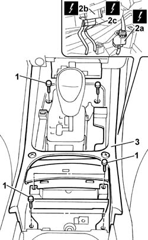
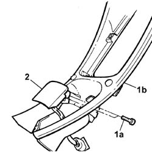
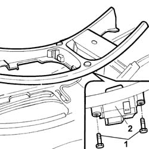
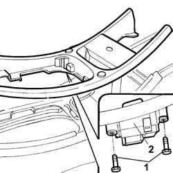

7040L28 TRIM for switch holder on tunnel cover - R.R.
- Path
- Procedures > 70 FITTINGS > 7040 BODY INTERIOR UPHOLSTERY AND TRIM > 7040L PASSGNER COMPARTMENT FLOOR COVERING > 7040L28 TRIM for switch holder on tunnel cover - R.R.
- Kind
- repair procedure (removal / refitting; the operation number is the code)
- Applies to
- all engines; all production periods
- Interactive page
- https://sloeber94.github.io/elrnDB-lThss/en/#/80508
Applies to: all engines; all production periods
 Removing
Removing
 Refitting
Refitting- Open the boot and disconnect the negative battery terminal.
See in Op. 7040L37 GEAR LEVER SURROUNDING TRIM - R.R.
See in Op. 7040L72 GLASS HOLDER on tunnel cover - R.R.
1. Undo the bolts fixing the trim on the tunnel cover.
2. Disconnect the electrical connections (2a), (2b), (2c).
 | Description | Connector |
|---|---|---|
2a | Electric brake control | H008 |
| Description | Connector |
|---|---|---|
2c | Head restraint folding control switch | H063 |
3. Head restraint folding control switch

Applies to: all engines; all production periods
1. Undo the bolts fixing the electric parking brake control button (1a) to the switch panel (1b).
- Release the button from the retaining tabs. Remove the electrically operated parking brake control button.
2. Remove the electrically operated parking brake control button.

Applies to: all engines; all production periods
1. Undo the bolts fixing the head restraint folding control switch from the switch panel trim.
2. Remove the switch

Applies to: all engines; all production periods
1. Undo the bolts fixing the head restraint folding control switch from the switch panel trim.
2. Remove the switch

Applies to: all engines; all production periods
Refitting
Removing- Fit the boot central unlocking switch on the switch panel trim tightening the fixing bolts.
- Fit the head restraint folding control switch on the switch panel trim tightening the fixing bolts.
- Fit the electric parking brake control button on the switch panel trim tightening the fixing bolts and securing the retaining tabs.
- Connect the electrical connections for the head restraint folding control switch, the boot central unlocking switch and the electric parking brake control.
| Description | Connector |
|---|---|---|
. | Head restraint folding control switch | H063 |
| Description | Connector |
|---|---|---|
. | Electric brake control | H008 |
- Fit the switch panel trim on the tunnel cover tightening the fixing bolts.
- Connect the electrical connectors for the sun blind control switch and the ASR and parking sensor switches.
- Fit the gear lever surrounding trim in the housing in the tunnel cover pressing the retaining trims until they are fastened.
- Fit the trim from the gear lever surround.
- If it has been removed, position the non-slip mat in the housing on the tunnel.
See in Op. 7040L72 GLASS HOLDER on tunnel cover - R.R.
- Connect the negative battery terminal.
Topics linked from this page (2)
Topics that link to this page (18)
- 3350E10 A.S.R. OFF SWITCH - R.R.
- 3380A60 Electrically operated HANDBRAKE control BUTTON - R.R.
- 5010B56 Duct between climate control casing and air duct to rear seats - R.R.
- 5010D27 UPPER MIXED AIR TEMPERATURE SENSOR (one) left or right - R.R. following electrical circuit check
- 5010D28 LOWER MIXED AIR TEMPERATURE SENSOR (one) left or right - R.R. following electrical circuit check
- 5040C10 Air conditioning CASING - R.R.
- 5040D86 air conditioner right air mixture flap control motor - r r
- 5040D94 Air conditioning upper left air distribution flap control motor (DEFROST) - R.R.
- 5040D96 Air conditioning upper right air distribution flap control motor (DEFROST) - R.R.
- 5505C26 ENGINE COMPARTMENT built in wiring - R.R.
- 5505C31 Under-FACIA WIRING - R.R.
- 5505C41 PASSENGER COMPARTMENT built in WIRING - R.R.
- 7025B30 Boot lid 0PENING CONTROL - R.R.
- 7040A10 Instrument facia TRIM - R.R.
- 7040A95 Left or right reinforcement crossmember (one), dashboard and bodyshell supporting crossmember - R.R.
- 7040L17 Passenger compartment front floor carpet - R.R.
- 7040L20 TUNNEL COVER - R.R.
- 7050L12 Rear seat head restraint folding control SWITCH (one), left or right - R.R.